Contents
Two things that are true of the whole app
It cannot get you more than Disney's rules allow. Three Multi Pass selections at a time, one Tier 1 until somebody taps in, one booking per attraction per day. What it has over you is that it is faster and more attentive than you are at 7:00:02.
Keep Disney's own app as the source of truth. AutoLL-5 is unofficial and experimental, and can stop working the day Disney changes an endpoint. When the two disagree about what you hold, Disney is right.
Every picture here comes from the preview harness
(npm run harness), which runs the real screens against
fake Disney clients. The data is invented — the party is Mickey,
Minnie and Pluto, and the clock drifts a minute or two between
shots — so times do not line up from one figure to the next. Where a
screenshot shows text the running app would never produce, the caption
says so.
Part one
Before the trip
Do all of this at home, days or weeks ahead. The mistakes that cost you a park morning get made weeks before it.
01 Install it
Open the setup page on the phone you will actually carry in the park — not on a laptop. The whole app is built for a phone-width screen.
| Bookmarklet | Userscript | |
|---|---|---|
| What it is | A bookmark you tap | A script that injects itself |
| When it runs | Only when you tap it | Automatically, on Disney's Lightning Lane pages |
| Needs | Nothing | Userscripts (iOS) or Tampermonkey (Android) |
Pick the userscript if you want AutoLL-5 to appear by itself; pick the bookmarklet if you would rather decide each time.
AutoLL-5, AutoLL-3, AutoLL-4 and AutoLL v1.0 all match
disneyworld.disney.go.com/vas/, so multiple enabled
autoloaders fight over the page. Multiple bookmarklets are
fine — each only runs when tapped.
Nothing carries over from the other builds
AutoLL-5 keeps its storage under autoll5.* and never reads
the other builds' keys. It starts completely empty: no party, no watch
list, not even the accepted warning. Their data is untouched, but you
rebuild here from scratch. Do it now, not at the gate.
To tell the builds apart later: AutoLL-5 names its browser tab AutoLL-5; the build name is also the last line of the Settings menu. It uses a palette favicon 🎨, while AutoLL-3 uses a flask, AutoLL-4 a DNA helix and v1.0 a bolt.
02 First run
Run the bookmarklet on a page whose address begins
disneyworld.disney.go.com. On any other Disney page the tab
is silently sent to AutoLL-5's start page instead — if your tab suddenly
becomes a GitHub Pages page, that is what happened.
The warning screen. A red screen headed Warning! says the app is experimental, unofficial and unwarranted. Tap Accept. It never appears again in that browser.
Signing in. AutoLL-5 never asks for your Disney password. It loads Disney's own OneID sheet, which opens by itself, and Disney hands back a session token held in your browser only. If the sheet does not load, the card gives up after fifteen seconds and offers a retry button — that is the fix for the blank white screen v1.0 used to leave you on. If you close Disney's sheet on purpose, it stays closed.
If it asks you to sign in again, a line under the heading says why:
| “Your Disney session has expired.” | The token ran out — or you tapped Log Out |
| “…ends before 5:00 PM park time.” | Still valid now, but it will die this afternoon |
| “…could not be read safely.” | The stored record failed its shape check |
If the session expires while Autopilot is running, the sign-in screen replaces the app and Autopilot stops with it. After you sign in again, Today says so — “Autopilot stopped at 2:14 PM when your Disney sign-in expired” — and that it is off. Turn it on yourself; it never comes back on by itself, because turning it on is the tap that arms the alert sound.
The five-o'clock refusal is the one to deal with immediately. Sign in again at breakfast; it costs a minute then and saves you discovering a dead session at 2pm in a queue.
03 Pick your party
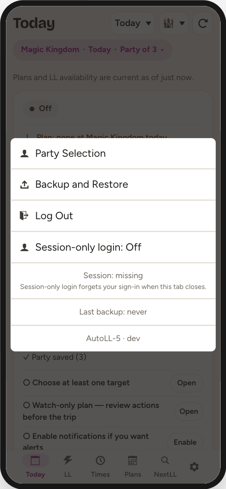
Tap the gear at the right-hand end of the bottom tab bar, then Party Selection. Choose “Only book for selected guests”, tick the people you actually want, and Save. After that, anyone outside your saved party appears on booking screens under Ineligible Guests marked NOT IN PARTY.
The same menu carries Backup and Restore (see It cannot protect its own storage, below), Log Out (it asks first), a Session-only login switch for a borrowed phone (the token then lives only as long as the tab), a Session: line telling you whether you are signed in, a Last backup: line, and the build name.
04 Choose the park and the day
The header of the Today tab carries a date control and a park control. Everything below them — the watch list, the plan, the timeline, the checks — is scoped to that one park on that one day. The chip under the title — “Magic Kingdom · Today · Party of 3” — does the same on Today, the LL tab and Times: tap it for the park, the day and the party together. In the calendar, a day with a plan saved for it or a pass held carries a dot.
This is the single most important idea in the app. A plan you build for Tuesday at Magic Kingdom is inert on Thursday at EPCOT. That is deliberate: on Tuesday, nothing EPCOT-shaped can spend an action. But it also means a plan can look empty simply because you are looking at the wrong day.
Autopilot follows those two controls too, on every tab. So while it runs with something armed, switching park or day — or tapping Swap ride on a pass for another park or day — asks first: “It is watching 3 armed at Magic Kingdom for today…” Stay keeps it where it is; Switch points it at the new park or day, and the plan left behind waits until you switch back.
The date picker offers 22 days as an upper bound. Most of those are not bookable for most guests; requests for them simply fail.
05 Build the watch list
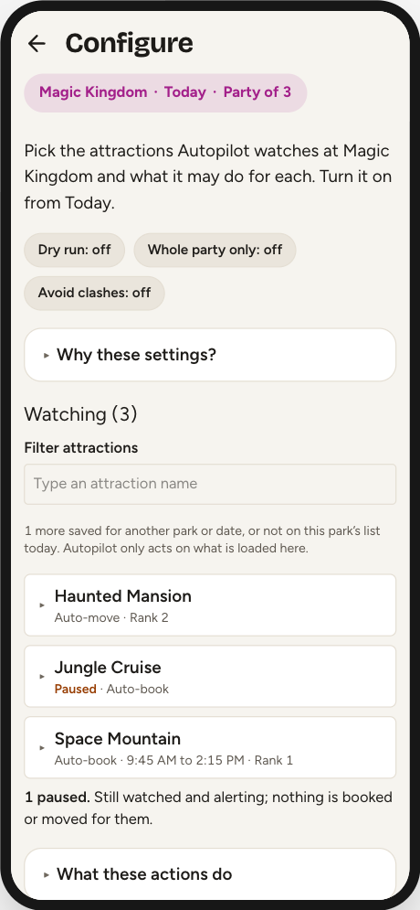
Today tab → Configure. This is where the plan lives. Nothing on this screen starts anything: it stays inert until you turn Autopilot on from Today.
Adding an attraction
Scroll to Lightning Lane attractions at the bottom and tap a name — each row reads + and the ride. It moves up into Watching (N) and its card opens, in view, so you can set it up. The Filter attractions box narrows both lists.
A newly added target starts as Watch only — it only alerts. That is on purpose: alerting and booking are separate decisions. The card says so until you choose.
What Autopilot does for it
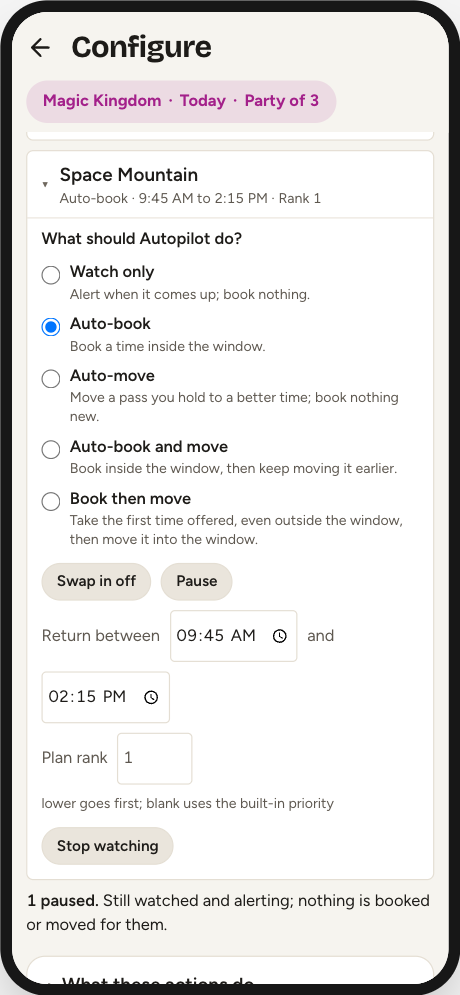
What should Autopilot do? is one choice of five, each with a line saying what it will do:
| Watch only | Alerts when it comes up; books nothing. |
| Auto-book | Books it without asking, the moment a return time inside its window is offered. |
| Auto-move | For a pass you already hold, moves it earlier when a better time appears — but only for a gain of 30 minutes or more, and never later. |
| Auto-book and move | Both: books inside the window, then keeps moving it earlier. |
| Book then move | Takes the first time offered even outside your window, so you hold something, then works to move it in. |
Chips under it combine with any choice:
| Swap in | When all three slots are full, gives up the held pass the app ranks lowest to take this one. While it is on, the card says which pass that would be now. |
| Pause | Keeps it watched and alerting while nothing is booked or moved for it. |
- Book then move ignores your window for the first booking. If a bad return time is worse than none, do not arm it. Once something is held, the window governs the move again.
- Swap in gives up the reservation the app ranks worst, preferring a non-Tier-1 — not the one with the highest Plan rank you typed. The swap is a single request, so you can never end up holding neither.
- Book then move and Swap in each imply booking, so an attraction can be booked with Auto-book off.
- Pausing keeps everything you armed. The choice stays, it just does not fire.
A third chip, Passkey, appears on non-Tier-1 attractions only — see Around a drop.
Return-time window
Return between two times. Leave either side blank for no bound. A window limits what Autopilot will take, not what it tells you about — an attraction outside its window still alerts, so a window can never hide the fact that something came back.
Clearing a bound to retype it does not take effect until you leave the
field. Backspacing over 15:00 to type 14:00
used to hand Autopilot an unbounded window for as long as the field was
empty — and during a drop burst the poller ticks about once a second.
Plan rank
Your own priority order; lower goes first when two attractions come back in the same moment. Leave it blank to use the app's built-in ranking, which is the same Priority sort the LL tab shows — so the engine always agrees with the list you are looking at. Rank also decides whether Autopilot passes on a Tier 1 offer to keep the slot for a better-ranked Tier 1. It does not decide which reservation a swap gives up.
Stop watching
Inside the card, at the bottom. Removal is inside the card on purpose, so a mis-tap on the list cannot lose a window and a rank. An Undo strip appears for 8 seconds with an Undo for every attraction removed in that time. A saved target that is not on today's list has a Remove of its own, with the same Undo.
The three safeguards
| Chip | Default | What it does |
|---|---|---|
| Dry run | Off | Rehearsal. Every check runs and the log says what it would have done; nothing is booked. |
| Whole party only | Off | Refuses to act unless everyone in your party is eligible. |
| Avoid clashes | Off | Refuses a return time that lands on top of something you already hold, dining included. |
All three safeguards start off. Each turns on only when you explicitly enable it, and an existing installation keeps the value it already saved. Booking by hand only warns about an overlap and lets you book anyway; here it skips instead, because there is nobody to warn.
Colour means something
Every chip also keeps “on” or “off” in its own text, so colour never carries the state alone. The callouts in this guide use the same four colours for the same four meanings.
06 Check it — Plan Check
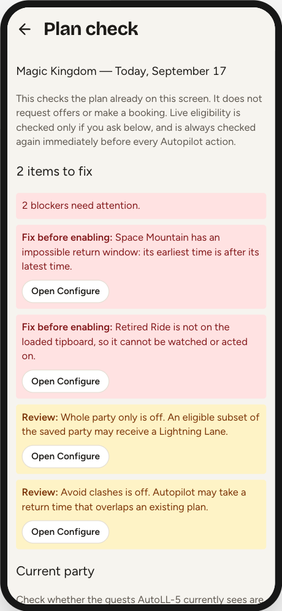
Today tab → Plan check. It reads the plan already on screen and returns blockers first. Opening it asks Disney for nothing — it judges only the configuration and data the app already has.
Blockers (“Fix before enabling:”)
- No saved targets apply to this park and date
- A target is not on the loaded tip board — usually a re-themed ride with a new internal ID
- An impossible return window — earliest after latest
- A window falling entirely inside the protected time around a plan you already hold
Reviews (“Review:”)
- Part of a window clashes with a held plan
- The tip board has not loaded
- Dry run is on
- Nothing is armed to act
- An armed attraction is paused
- More than one Tier 1 target armed to book
- Whole party only is off, or Avoid clashes is off
Most items carry an Open Configure button. Items about the tip board carry Refresh LL list, one of only two things here that go to the network. The other is Check current party, which asks Disney whether your saved guests are generally eligible — it cannot create an offer and cannot spend an entitlement.
A green Ready says the plan is internally consistent, not that a Lightning Lane exists. Eligibility, inventory and the offer's real return time are checked again immediately before every action.
07 See it — the timeline
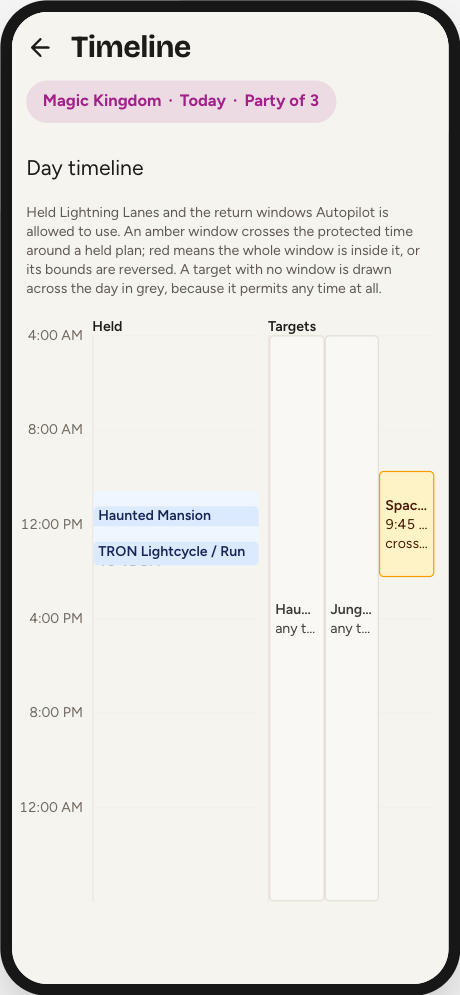
Today tab → Timeline. Your held passes down the left, the windows Autopilot may use down the right, both on one 4am-to-4am rail.
The pale band behind each held pass is the protected time around it: 40 minutes before the return time, and after it 60 minutes when the pass has no known end or 40 when it does. A window drawn over that band is a window Autopilot will mostly refuse.
| Green | Both bounds set, clear of every held Multi Pass |
| Amber | “crosses a held plan” — part of the window is still usable |
| Red | “window fully blocked”, or “bounds reversed” |
| Grey | “any time” — no window, so it permits everything |
Three limits worth knowing:
- Lunch is not on the timeline. Only Multi Passes are drawn, and only they colour the windows. A dining reservation constrains your bookings without appearing here — which is why Plan Check can call a target blocked while the timeline shows it only amber. Treat the timeline as the picture and Plan Check as the verdict.
- A half-set window reads as no window. Set only an earliest time (or only a latest) and the bar is drawn grey across the whole day, uncoloured and unflagged — even though Autopilot does enforce the bound you set.
- Names are truncated to about three characters. Tap a bar to find out which attraction it is.
08 The pre-trip checklist
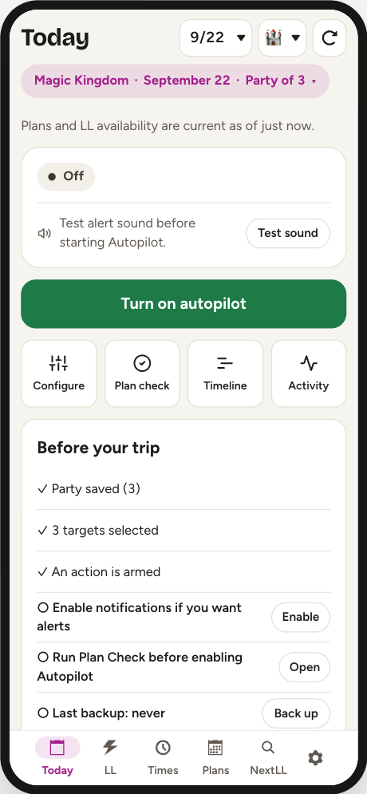
When the day on screen is not today, the Today tab becomes a readiness list. Five items, each with a button that opens the screen that fixes it: party saved, at least one target, an action actually armed, notifications allowed, Plan Check reviewed.
It also shows on a first run, with nothing saved, whatever the date. With a plan saved, a sixth line says when the last backup was, and offers Back up once it is more than a week old; with nothing saved at all, Today offers Restore a backup instead.
It is a local readiness summary, not a live check of Disney — it makes no requests. On the day itself its place is taken by the park-morning check in the status card, and the “Plan Check reviewed” tick is not saved across a reload.
The night before
- Re-check the park and date in the header.
- Run Plan Check and clear the blockers.
- Confirm Dry run is off if you want it to act — dry run survives reloads and a new park day.
- Sign in again if the session line warns it ends before 5pm.
Part two
On the park day
You land on the day, not in a menu. Autopilot always starts off — the on/off state is deliberately not remembered, and the 4am park-day rollover switches it off too.
09 Reading the Today tab
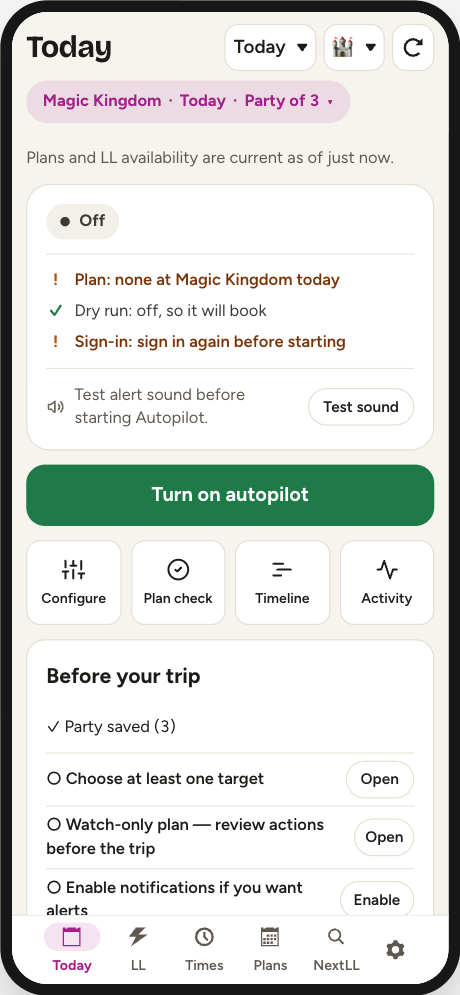
Top to bottom, Today answers the questions you actually ask in a queue.
The freshness line — “Plans and LL availability are current as of just now.” This is the line that tells you whether to believe the rest of the screen. If it is climbing, tap refresh; past five minutes it turns amber. If there is no line at all, neither list has ever loaded — which is not the same as fresh.
Before you start. On the day itself, while Autopilot is off, the status card is the park morning's go/no-go: whether anything is armed at this park, whether dry run is on, whether the sign-in lasts past 5 PM, and the alert sound, with Test sound. Each line reads its own signal. It goes once Autopilot is on.
Held (N) is what you are actually holding, at every park on that date. Tap a pass to open it. Once its window is open, a live pass counts down — “· window ends in 20 min”, amber in the last half hour. That is a reminder, not a watch: nothing acts on it, and a pass tapped in minutes ago may still show until Plans refreshes. Watching (N) is what Autopilot is still after, for the park in the header only; tap a row to open its card in Configure. The two lists are scoped differently on purpose — which is why you can see Held (2) above “Nothing watched at Magic Kingdom on this date.” If this date's plan was saved at another park, Today names it and offers Switch to that park — it never switches by itself. And while Autopilot runs with nothing armed, it says so in amber: it can only alert.
The four buttons — Configure, Plan check, Timeline, Activity — are the screens Today deliberately does not try to be. Book again at / Next scheduled drop are the two times that decide when anything can happen. On any other date there is no drop time, because Autopilot bursts for drops only on the day itself; a line says so, and that at the 7:00 opening NextLL or booking by hand is faster.
10 Turning Autopilot on
The big button in the middle. That one tap does four things: starts the loop, unlocks the alert chime, asks the browser for notification permission, and asks the phone to keep the screen awake. That is why it has to be a deliberate tap and not a toggle in the header.
Turning it on starts a fresh run: the session log, skip counts, refusal state, per-run locks and the drop-detection baseline are all cleared, and anything already available gets re-alerted.
Check the sound before you rely on it. Under the notification notices Today says whether the alert sound is armed, with a Test sound button next to it. On iOS the chime is not one channel of three — notifications need the page installed to your Home Screen, and vibration is unimplemented — so if the sound is not armed during a run, nothing can reach you. While Autopilot is off, Today presents this as a neutral pre-flight check rather than a fault. Tap Test sound before starting, and again after any interruption if you want to verify it manually. If you hear two notes, the channel works.
Autopilot only runs while the page is open and in front of you. Lock the phone or switch apps and the browser throttles its timers to minutes. The screen wake lock exists to prevent exactly this, and it is best-effort. Today says Screen is being kept awake while it is held and warns Screen may sleep when the browser supports the lock but has not granted one. That row appears only while Autopilot is on, because an idle wake lock is expected when no checks are running.
Put the running phone in your pocket
Once Autopilot is on, tap Pocket it. The full-screen guard leaves the poller and notifications running while preventing the live glass from reaching the controls underneath it. It also blocks page scrolling and pull-to-refresh; a reload would turn Autopilot off.
To lift the guard, tap the moving circle three times. The three clean taps must land within 10 seconds. A miss, second finger, drag or cancelled gesture clears all progress, and the target moves after each accepted tap.
If the phone reports your fingertip as unusually large, keep using one finger and follow the moving circle. Three large-contact taps within 20 seconds lift the guard through its escape path. It allows a little more movement, still resets on a miss or second contact, and remembers your phone until the page is reloaded so re-pocketing does not make you repeat a separate setup.
The guarded screen is also a status display. It shows the current checking pace, the time it is checking hard at in large type with how long until it, the number of targets that can actually act, today's booking count, a line such as Sound on · Screen held, and the last thing Autopilot did. A red No sound or Screen may sleep means to lift the guard and check the named channel; the status follows the browser directly rather than waiting for the next poll. If Autopilot stops or the 4am rollover turns it off, the guard changes to a red warning. Lift it and deliberately start a new run; an off or stopped guard is not still checking.
Lock the phone to Safari with Guided Access
Pocket mode guards the page. It cannot guard Safari's own toolbar, because no web page can cover or disable browser chrome — and back is the one that really hurts, because it navigates away and destroys the run. iOS Guided Access is what stops a pocket reaching it.
Set it up once. Settings → Accessibility → Guided Access, turn it on, then set Passcode Settings — a passcode plus Face ID, so ending a session is a triple-click and a glance rather than typing in bright sun — and Display Auto-Lock generously (Never, or the longest offered). That setting is separate from the app's screen wake lock, and you do not want the two arguing.
Each time you pocket the phone. Start Autopilot, tap Pocket it, then triple-click the side button (double-click on iOS 18 and earlier). On the Guided Access screen, circle the areas to disable with your finger, then tap Start. iOS remembers the regions per app, so you draw them once. On an iPhone the guarded screen reminds you of this every time, because a web page cannot tell whether Guided Access is on.
What to circle:
- The bottom strip — on Safari's default layout this holds the address bar, back, forward, share, bookmarks and tabs.
- The top strip — the status bar and the notch. Check which Safari layout you use first: if you moved the address bar to the top, this matters as much as the bottom.
Leave the middle alone. That is where AutoLL-5 is.
Two ways to run it. Circle the strips and leave touch on, and Pocket mode still works normally — three taps lift the guard and you can check on things without ending the session. Or open Session Settings and turn Touch off, and nothing on the glass responds at all; you can still read the guarded screen, and you triple-click to end Guided Access when you want to interact. The first is more convenient, the second is airtight. They are alternatives, not layers: with Touch off, the three-tap unlock cannot work either.
To end it, triple-click the side button, authenticate, then End.
Crash Detection and emergency calls do not work during a Guided Access session. Apple states this outright. End the session rather than leaving it running all day out of habit.
11 What it is doing right now
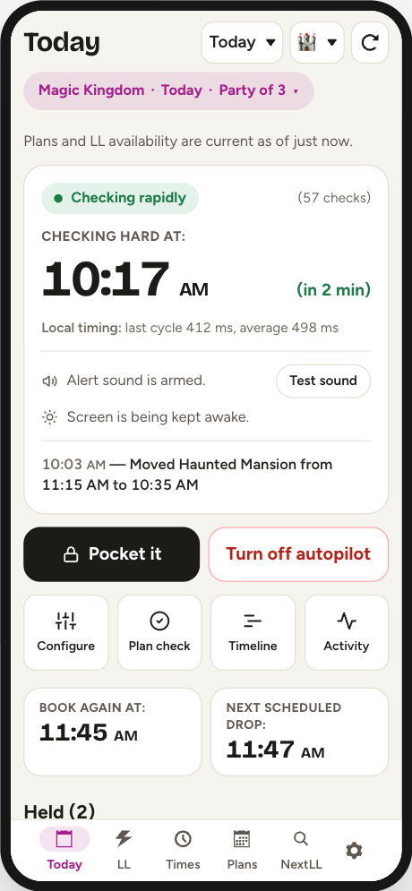
| Status | Pace | When |
|---|---|---|
| Off | — | Not running |
| Watching | ~45 s | Nothing near |
| Checking often | ~6 s | 5→2 min before a target, or inside a refill window |
| Checking rapidly | ~1.2 s | T−2:00 to T+2:00 around a target |
| Stopped | — | Eight checks failed in a row |
Beside it, (57 checks) counts the checks since you turned it on — the simplest proof it is alive is that number rising between visits. Local timing: last cycle 412 ms is how long a check is taking on your connection; a sudden jump means slow wifi, not a bug.
The bold coloured line above the status is history — the last thing Autopilot actually did, with a time. It survives switching Autopilot off, because the day's log is saved. Only the Status block is live.
Checking hard at, in the Status block, is whatever moment the poller is chasing — a drop or a booking window, including a drop the app has learned by observation. Next scheduled drop, lower down, is the built-in table only. They can differ.
How to tell it is working
Freshness line recent → button red → Status not Off or Stopped → check counter rising. If all four look healthy and nothing is booking, look for the red refusal box, then the amber “failed checks in a row” line, then the yellow dry-run banner, then the n armed count under Watching. A running Autopilot with 0 armed will never book anything. The line under the latest event sums it up: “Nothing booked yet. Most often, the offered time was outside the window (12×).”
Dry run
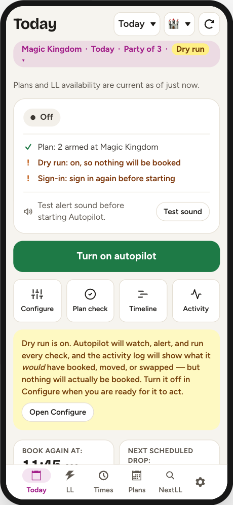
“Autopilot will watch, alert, and run every check, and the activity log will show what it would have booked, moved, or swapped — but nothing will actually be booked.” Rehearsal runs the same pre-offer guards as the live path. The one thing it cannot test is the real time Disney would have offered, because getting that costs a real request. Turn it off in Configure.
12 Around a drop
You do not have to do anything. Autopilot carries a table of the minutes Disney tends to release extra inventory, per park, and bursts at all of them — starting two minutes early, because Disney releases drop inventory early often enough that arriving at the advertised minute is arriving late.
Kingdom
Studios
Kingdom
Every scheduled drop in the shipped table, on an 8am–10pm scale. Note the :47 pattern, and the two :17 exceptions at Magic Kingdom (14:17) and Hollywood Studios (13:17).
If any attraction in the park drops at 13:47, Autopilot bursts at 13:47 even if you are not watching that ride. Refill windows are the opposite — they only take effect for an attraction on your watch list.
Refill windows
Nine attractions trickle inventory back over hours rather than dropping at an instant. For those, Autopilot holds the 6-second pace for the whole span:
| 09:00–10:30 | Test Track · Slinky Dog Dash · Toy Story Mania · Tower of Terror · Na'vi River Journey |
| 11:00–14:30 | Jingle Cruise · Jungle Cruise · Peter Pan's Flight · Mickey & Minnie's Runaway Railway |
Outside those nine drop minutes, a return time appearing is somebody cancelling — and forty-five seconds is how you miss it.
The Tier 1 hold
Disney lets a party hold one Tier 1 selection at a time until the party's first redemption. So Autopilot will decline a Tier 1 it could take if a Tier 1 you ranked higher has a drop coming within 90 minutes. Past that horizon the hold releases on its own. It shows up in Activity as “held the Tier 1 slot for a better attraction”; pausing the attraction you want less removes the hold.
The passkey
Mark one easy, high-availability, non-Tier-1 attraction as the day's passkey in its Configure card. Autopilot books it first; once Disney's own tracker says that entitlement is spent, it asks the eligibility endpoint whether the one-Tier-1 rule has actually lifted for everyone in your party.
The passkey unlocks only when the pass is actually spent — and Disney counts a window you let lapse the same as one you rode, so Autopilot cannot tell those apart.
13 The LL tab — the tip board
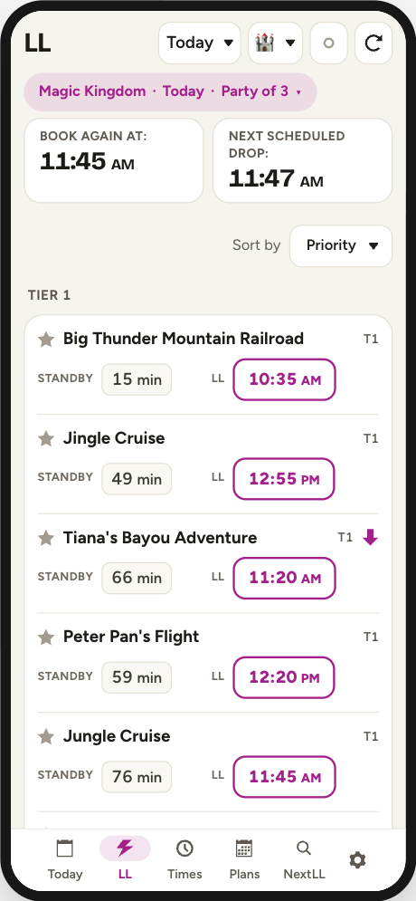
One row per attraction: a ☆ favourite, the name, a tier badge, the current STANDBY wait, and an LL button showing the next return time. Tap that button to start booking. The banner under the header gives the next moment you may book (Book again at) and the park's next drop from the built-in table (Next scheduled drop).
Sorting — Sort by, at the top of the list — offers Priority (the app's own ranking), Nearby (closest first, today only), Standby, Soonest, and A to Z. Whatever you choose, attractions with no availability sink to the bottom, and sorting never crosses a tier boundary.
Symbols. ⚡ is a Lightning Pick — a long standby wait paired with a soon return time. ⬇ means an upcoming drop (solid = the next one, faded = later). ✓ means you already hold a pass. A green bar down the left edge means this attraction is available earlier than a pass you already hold in that tier; the legend at the foot of the list keys all four.
The dot in the header is the Autopilot status light: green running, amber running with nothing armed, yellow dry run, red stopped, a hollow dot off, with the number armed beside it while it runs. Tapping it opens Today; it is navigation only, so a mis-tap can never change what gets booked.
Sold-out attractions still appear, reading “none”. A ride Disney has re-themed under a new internal ID vanishes from this list entirely — the warning for that is on Today.
14 Booking by hand
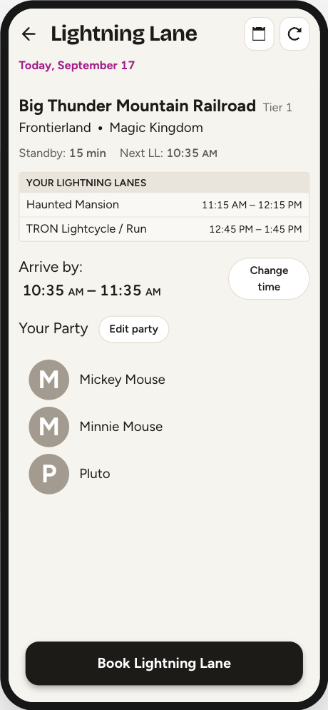
Tap any LL time on the tip board. You get the attraction, its land and park, a box listing the passes you already hold that day, the offered window as Arrive by: with a Change time button, and Your Party with an Edit party button. The button at the bottom commits.
- Change time opens a grid of return times by hour. Tick Show all to see ten-minute slots across the whole day — those are the app's educated guesses, not Disney's real inventory, and picking one that does not exist gets you the nearest one that does.
- Edit party trims the party. Adding someone who was not previously selected fetches a fresh offer, so the return time can change; removing guests leaves the offer alone.
If the offer goes stale between loading and tapping Book, you get a red “Offer expired — refreshing…” flash and a new offer is fetched. Check the new time before tapping Book again.
Three dead ends you may land on instead: No Guests Found (a network blip — Try Again), No Eligible Guests (often with an “Eligible at 11:56 AM” note), and No Reservations Available (not enough slots for the whole party — trim it and check again).
15 The Plans tab
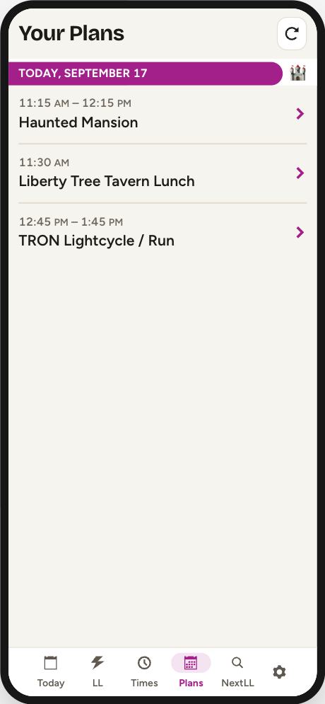
Lightning Lanes, DAS selections, dining and boarding groups, grouped by park day. Tap any row for details.
Only Multi Pass Lightning Lanes can be changed here. Dining, park passes, boarding groups and Multiple Experiences passes are read-only however they look. On a Multi Pass's details screen: Change time gives a different return time for the same attraction; Swap ride hands the pass back to the booking flow to trade it for a different attraction, keeping it held until the replacement is booked; Cancel removes chosen guests, or the whole reservation when you remove everyone. Until you book or tap Keep current, every tab carries a “Modifying …” strip, and the booking screen says what the new booking replaces.
The red button on Cancel Guests opens a check that names the ride, the time and the guests, and only Yes, cancel sends it. If Disney refuses it, the screen stays where it is with the error, and the party is unchanged. If Disney does not answer at all, it says so — the cancel may or may not have gone through — and points to Plans. Booking and modifying by hand do the same: a request with no answer is never shown as a plain failure beside a live button.
Plans mirrors Disney; it is not live. A pass cancelled on another phone will not disappear until you refresh.
16 The Times tab, and DAS
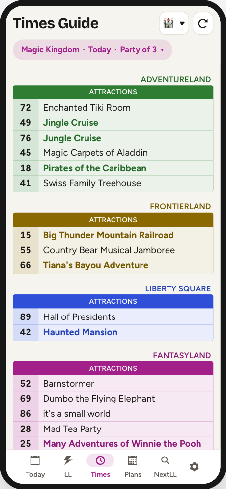
A read-only park guide: standby waits, show and character times, and
Individual Lightning Lane prices, grouped by land. Names in bold and in
the land's colour are the ones the data file flags as popular. Symbols:
– no posted wait, Down temporarily down,
VQ virtual queue only.
This tab is also the only way to request a DAS return time: a DAS button appears in the header if Disney reports at least one registered party on your account. An existing DAS selection also opens from Plans and the Timeline.
17 The NextLL tab
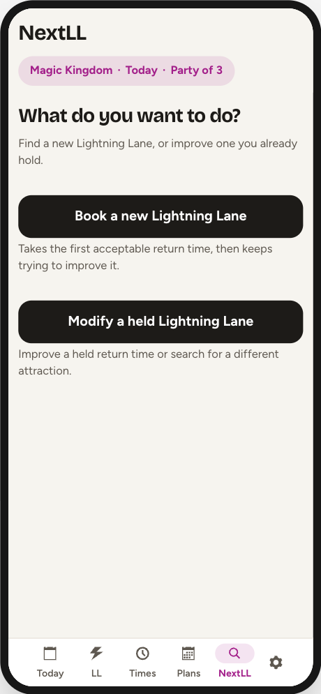
NextLL is the “I want this ride, now” engine — one attraction, one optional window, one button, and you stand there watching. It is a second booking engine running inside the app's own, deliberately kept apart from Autopilot: its own watch list, its own storage, its own poller. A quick search can never add to, arm, or switch off your day plan.
Book a new Lightning Lane picks one attraction and takes the first time it can get, then keeps trying to move it earlier — checking about every 0.6 seconds.
“Return by 1pm” does not mean it will only book before 1pm. With nothing held the window is stripped and it takes whatever is offered — even 7pm — and only then starts moving it toward your window.
“Return after” is the opposite trap. Setting a lower bound turns the window into a filter on the booking, so the search can spend the morning refusing everything earlier than your bound and holding nothing at all. For a later return, use Time Search.
Leaving the tab stops the search, so while one runs, a tap on another tab — or on the footer row — asks first: Stay or Leave. It is remembered: come back, tap “Book a new Lightning Lane” again, and a card offers to resume. Today also shows a reminder with an “Open NextLL” button. And it never stops itself when it succeeds — once the goal is met the button reads Done, and the screen says it keeps checking for an earlier time until you tap it. Dry run stops it too: it is the same setting as Autopilot's, and the search screen says so while it is on.
When two people hold the same ride. If more than one person holds the attraction at different times, NextLL works on the reservation your saved party holds. With no party saved, or a party that includes both, it cannot tell which you mean, so it says so and lists who holds what, each with Move this one, which opens the search on that reservation. Or save a party of only the people whose reservation should move — the gear, then Party Selection — and start again. Autopilot follows the same rule, and Plan Check warns about it ahead of time.
18 Time Search
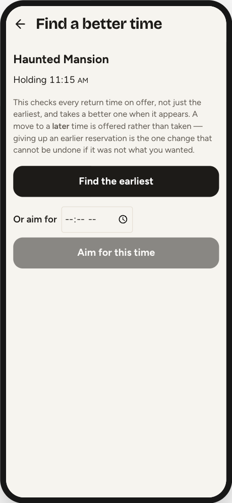
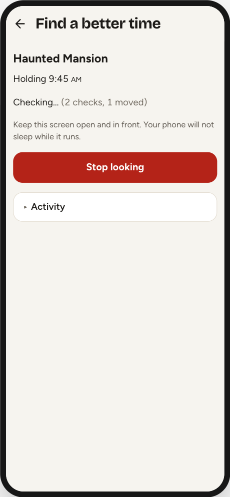
NextLL → Modify a held Lightning Lane → pick one → Find a better time. Also reachable from a held pass: Plans → the row → Change time → Find a better time. It works on the pass you opened it from, even when someone else in your party holds the same ride at another time.
This is the one screen that can do what Autopilot structurally cannot. Autopilot sees only the single earliest time the tip board advertises, so it can only pull a pass earlier. Time Search opens a real modify offer and reads the return-time grid behind it, so it can walk a pass in either direction toward a time you type in — including later on purpose, for a dinner reservation.
The grid is Disney's list, and it leaves times out. It omits any time that would overlap another of your plans, though Disney books such a time when asked for it by name — which is how the manual screen's Show all reaches it. So Time Search asks by name as well: for the tip board's earliest when finding the earliest, and for your time when aiming. With Avoid clashes on, it skips any time that overlaps another plan, exactly as Autopilot does; off, the default, it takes an overlapping time the same way Show all lets you.
- Find the earliest chases the soonest slot.
- Or aim for + Aim for this time walks toward a named time, accepting gains as small as five minutes.
When the best move toward your target is a later slot, an amber box appears: “A later time is available… Taking it gives up the earlier reservation you hold now.” with a Take it button. Nothing is held for you while it waits — the slot can be gone by the time you tap. The move is made on the next cycle, up to six seconds later, and the screen says “Moving to …” from the moment you tap.
Both searches take an exclusive, expiring lock on that one reservation from their first attempted change, so Autopilot cannot touch it mid-search. If Autopilot got there first you get an amber “Waiting for Autopilot to finish a request…” box, and the search takes over as soon as that returns.
Change attraction is the sister screen: it hunts a replacement ride for a pass you hold, and always asks before replacing, even if the offered time is earlier. Once you tap Replace Lightning Lane it says it is replacing, then that it is waiting for Plans, and finally Replaced … Confirmed in Plans.
19 The Activity screen
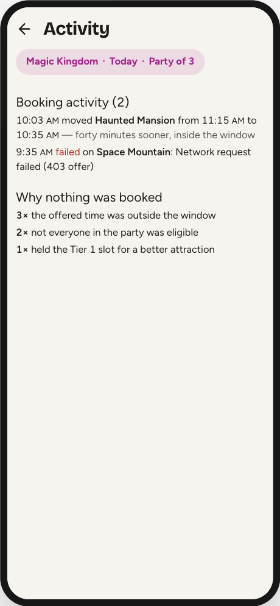
Today tab → Activity. Three sections.
Booking activity (N) — today's bookings, moves, swaps, rehearsals and failures, newest first, capped at 20 rows. Repeated failures collapse to one row with a ×47 count instead of flooding the log.
Why nothing was booked — a tally of every reason Autopilot decided not to act, in plain English: “the offered time was outside the window”, “not everyone in the party was eligible”, “held the Tier 1 slot for a better attraction”, “it clashed with something already booked”, and a dozen more. This is the answer to “it's running, so why hasn't it booked anything?” — skips are the normal outcome and are kept out of the log so they cannot swamp it.
Learned drop times — what Autopilot has seen with its own eyes, against the built-in schedule. A drop seen on two different park days becomes eligible to join the times it bursts for. A red “never seen in 3 watched days” is evidence for you, not an action it took: removing a built-in time is switched off in this build.
“forty minutes sooner, inside the window” and “Network request failed (403 offer)” are harness fixtures. The running app writes one of three fixed justifications, and its failure rows read “Request failed (403)”.
The log survives a reload; the skip counts do not — they are per-run and in memory. At 4am both reset and Autopilot switches itself off.
Part three
When something goes wrong
Most failures leave the watching, alerting and drop-learning half of the app working even when booking is blocked. That is both the design and the thing that is easiest to miss.
20 The one diagnostic
Book a single Lightning Lane by hand and read the banner at the bottom of the screen. Everything else in this part is a variation on that one test.
| Banner | Meaning | What to do |
|---|---|---|
(403 guests) |
Disney's filter is refusing this app | Stop trying; book in Disney's app. Leave AutoLL-5 running as a watcher |
(no response guests) |
Your signal dropped — an 8-second timeout | Move, or switch wifi off. If you were mid-booking, check Disney's Plans first |
| “Too many requests just now.” | You tapped faster than 5 requests/second | Wait five seconds |
| “Unknown error occurred” | No status at all — usually the rate limit, on screens that do not name it | Wait five seconds and retry once |
An error banner stays, with the time it happened, until you dismiss it with × or the screen tries again. It is stored nowhere else, so read it before you dismiss it.
21 Healthy, but never booking
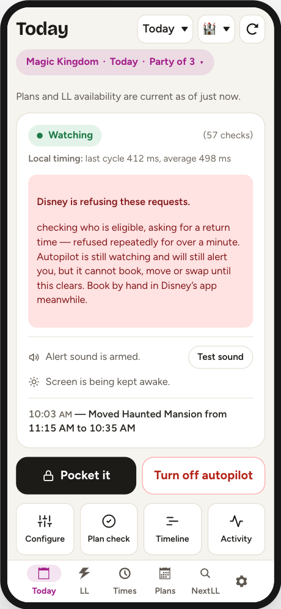
This is the failure mode to watch for. Disney's filter hits the eligibility call first — one step before an offer exists — so Autopilot keeps polling, keeps alerting and keeps learning drop times while never acting.
The red “Disney is refusing these requests.” box on Today is the only thing that names it. It waits a full minute before appearing, so it describes a condition rather than a hiccup, and it only counts outright 403s. Book by hand meanwhile; do not keep toggling Autopilot, because the refusal is Disney's.
An attraction has vanished from the list
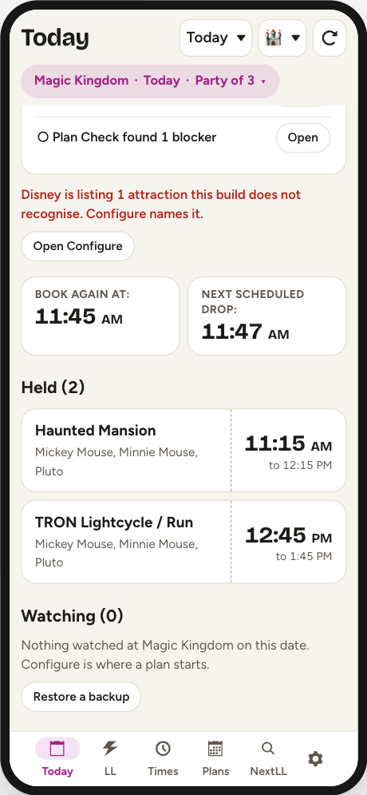
Disney has re-themed a ride and issued a new internal ID; the old one stops appearing, and the new one is dropped silently — no row, no target, no alert. Open Configure for the ID numbers. There is no fix inside the app. Check your saved plan too: the target sits there looking armed, and Configure lists it under “Not on today's list” with a remove button.
22 Autopilot stopped
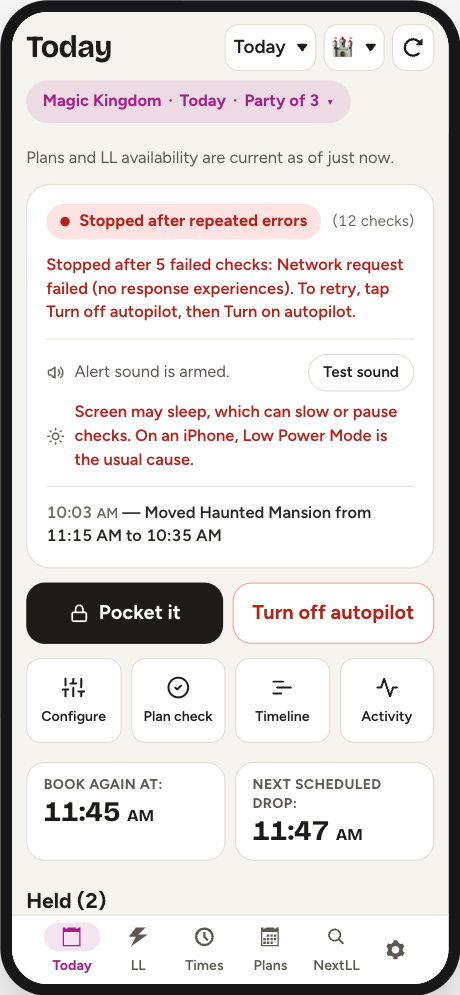
Eight checks failed in a row, so it gave up rather than spin. It is no longer watching, alerting or booking, and it does not restart itself.
The switch still reads Turn off autopilot, so restarting is two taps: off, then on, and the screen says so. Once it has stopped, Turn off takes one tap; while it is running it takes two, the second within three seconds (Tap again to turn off), because it sits beside Pocket it. The exception is a stop caused by an expired session — signing back in remounts the app with Autopilot off, so there it is one tap, and Today says when it stopped.
No notification fires when it stops. You find out by looking at Today, by the footer strip on other tabs (it turns red), by noticing the header status light has turned red — or by your phone starting to sleep normally again, because the wake lock is released.
23 A change that never came back
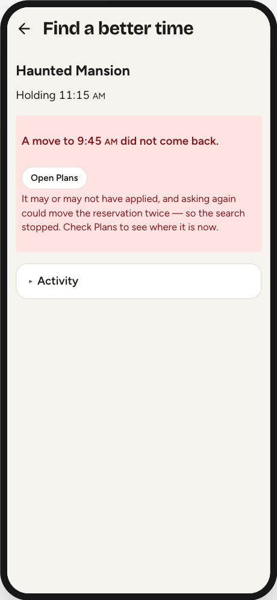
A booking request can leave the phone and never return: the park's wifi drops, the response never arrives. It may have worked or it may not, and nothing arriving later can tell you which. Retrying risks moving a reservation twice; forgetting it leaves a pass unprotected.
So that reservation is held, and the hold is visible. Activity and Plan Check both list it under a red panel, naming the attraction and what the change was trying to do — “Move Haunted Mansion from 7:15 PM to 11:40 AM on March 5”. Nothing touches that pass until Disney's own itinerary shows the exact result the request asked for.
Open Disney's Plans and look. Then, to release it yourself: I checked Disney — resolve this → Clear this protection. It asks twice because clearing it is the one action here that can cost you a reservation. The protection can also clear itself: a later Plans refresh showing the exact requested time resolves it with no tap from you.
Common questions
| “Why is nothing booking?” | In order: is Dry run on? Is anything armed and unpaused? Is the refusal box showing? Did it stop? Then read Why nothing was booked on Activity. |
| “Why did it skip a time I wanted?” | Most likely the offered time fell outside that attraction's window, or Avoid clashes refused it against a plan you already hold — including dining, which the timeline does not draw. |
| “It booked something terrible.” | Check whether Book then move is armed for it. That action ignores your window for the first booking by design. |
| “It gave away the wrong pass.” | Swap in gives up the reservation the app ranks worst, not the one with the highest Plan rank you typed. |
What it cannot do
Walt Disney World Lightning Lane Multi Pass only. Disneyland and virtual queues were removed. AutoLL v1.0 still carries both; if you need to join a boarding group, use Disney's app. A boarding group already in your itinerary still displays here. Individual Lightning Lane is not booked either — only Multi Pass.
It cannot protect its own storage. Everything AutoLL-5 keeps — your party, your watch list, and what it has learned about drops — is stored by Safari for Disney's website. Safari deletes a website's stored data after about a week of Safari use without a visit to that site, and nothing warns you when it does. Back it up: the gear at the bottom right, then Backup and Restore, then Back up now. It saves one file — your plan, your party and every drop the learner has seen — to Files, or AirDrops it to a computer. Your Disney sign-in is never in it. The same menu says how long it has been since the last one. To put it back — on a new phone, or after Safari has emptied this one — turn Autopilot off, open Backup and Restore, then Choose a backup file. It shows what the file holds before it changes anything, and Replace this phone’s plan swaps in the file’s watch lists, party and starred attractions and adds the file’s drops to what the phone has seen. Your sign-in and settings, dry run included, stay as they are. Reload the page afterwards. Between trips, open AutoLL-5 at least once a week as well, or it may start empty next time.
Rough edges, as of 1.4.4. Known, recorded, and not fixed yet:
- The day timeline truncates every target name at 360 px, and its bars are 14–20 px tall, which is a small tap target.
- Undoing two target removals in a row loses the first one's window and rank.
- A Plan Check item that names a setting opens Configure at the top of a long screen rather than at the setting.
Reference
The numbers
Every threshold the engine actually uses, in one place.
Checking speeds
| Mode | Interval | Trigger |
|---|---|---|
| Idle — “Watching” | 45 s | Nothing near |
| Approach — “Checking often” | 6 s | 5→2 min before a target, or inside a refill window |
| Burst — “Checking rapidly” | 1.2 s | T−2:00 to T+2:00 around a target |
| Tomorrow | 15 s | Booking date is tomorrow, 7am–10pm park time |
| NextLL quick search | 0.6 s | A hand-started book search |
| Time Search | 6 s | A hand-started time search |
Every interval is spread ±20% so the pattern is not perfectly regular. A date further out than tomorrow gets no drop times at all and sits at 45 s all day.
Limits and thresholds
Protected span around a plan: 40 minutes before it starts; after the start, 60 minutes when the plan has no end time or 40 when it does — and for a show, up to 20 minutes before the show ends.
What resets when
| Event | Effect |
|---|---|
| Turning Autopilot on | Clears the session log, skip counts, refusal state, locks, cache, passkey status and drop baseline; re-alerts anything already available |
| Turning Autopilot off | Leaves skip counts and the log alone |
| Page reload | Autopilot off; skip counts lost; log and watch list survive |
| 4am park-day rollover | Autopilot off; screen wake lock released; log emptied; skip counts zeroed |
Glossary
| Multi Pass | The Lightning Lane product this app books. Three at a time. |
| Tier 1 | Disney's headliner group. One at a time until the party's first redemption. |
| Drop | A scheduled release of extra inventory at a fixed minute. |
| Refill window | A span of hours over which an attraction trickles inventory back, instead of dropping at an instant. |
| Passkey | An easy non-Tier-1 ride you mark to be booked and ridden first, to clear the Tier 1 hold. |
| Rank | Your own priority number for a target. Lower goes first; blank uses the built-in ranking. |
| Protected time | The span around a plan you hold that Autopilot treats as spoken for. |
| Dry run | Rehearsal: every check runs, nothing is booked. |
| Quarantine | A hold placed on a reservation whose change got no definite answer from Disney. |